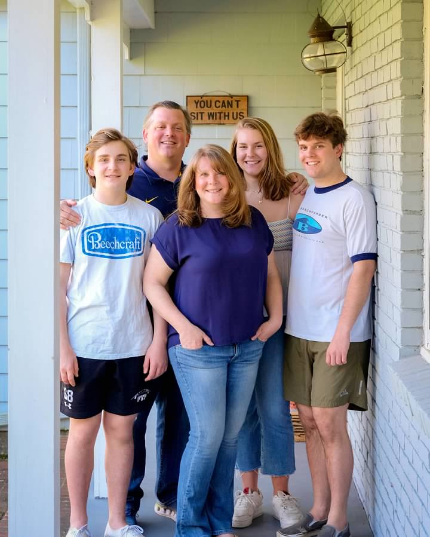
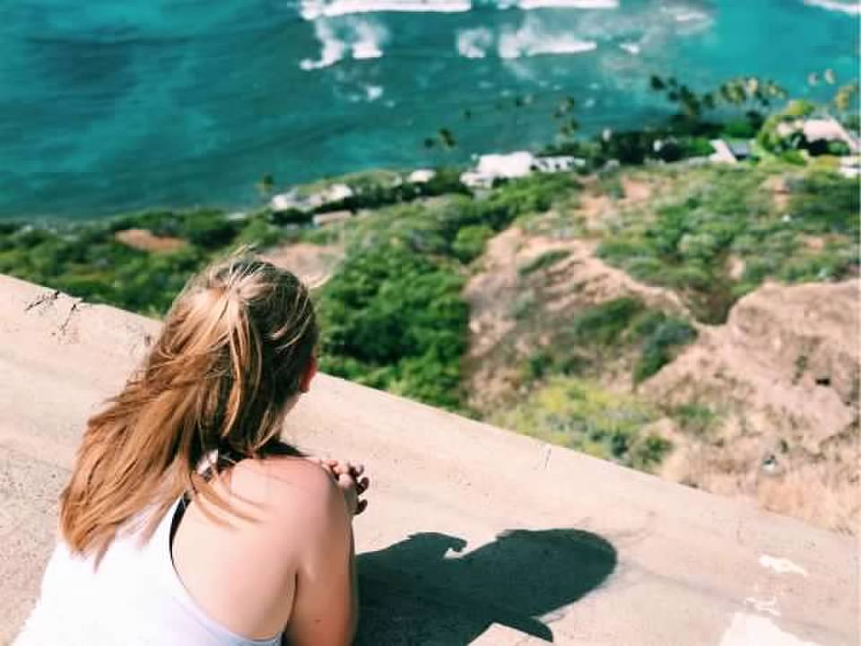
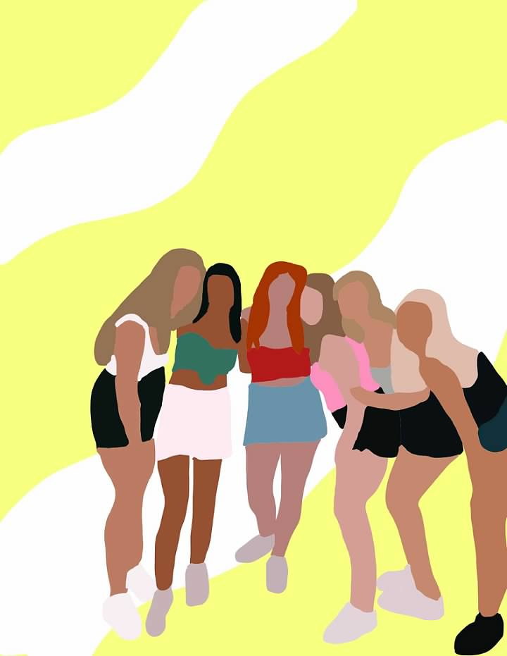
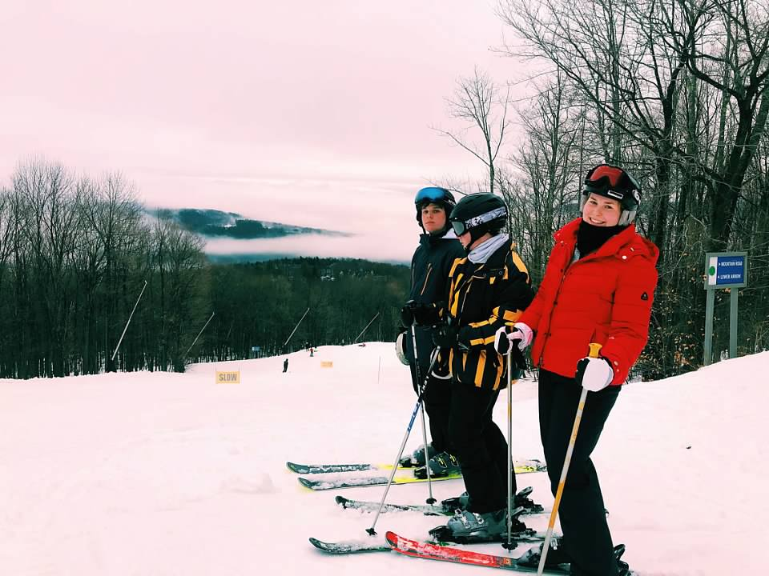
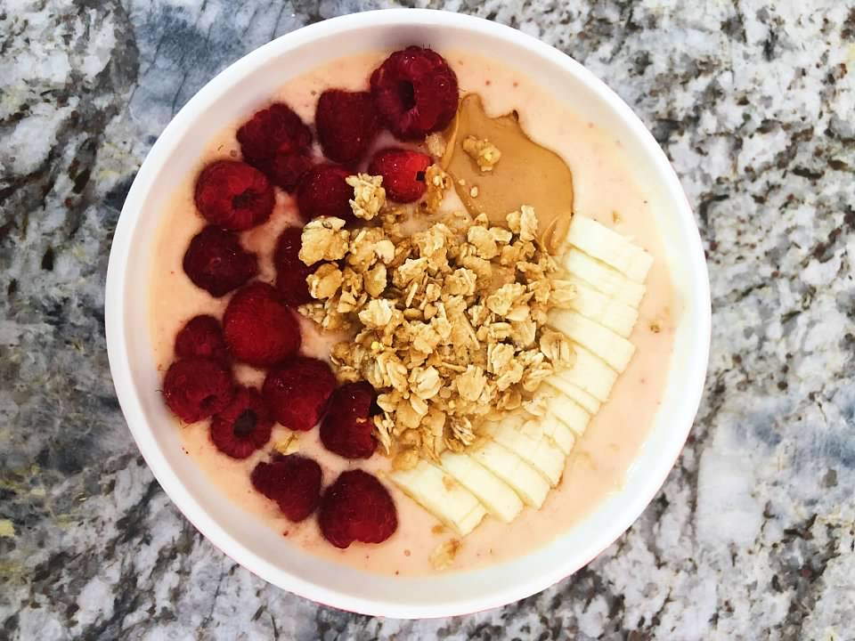
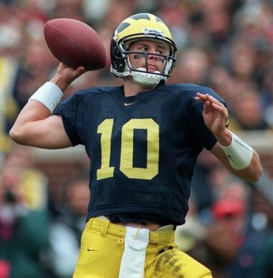
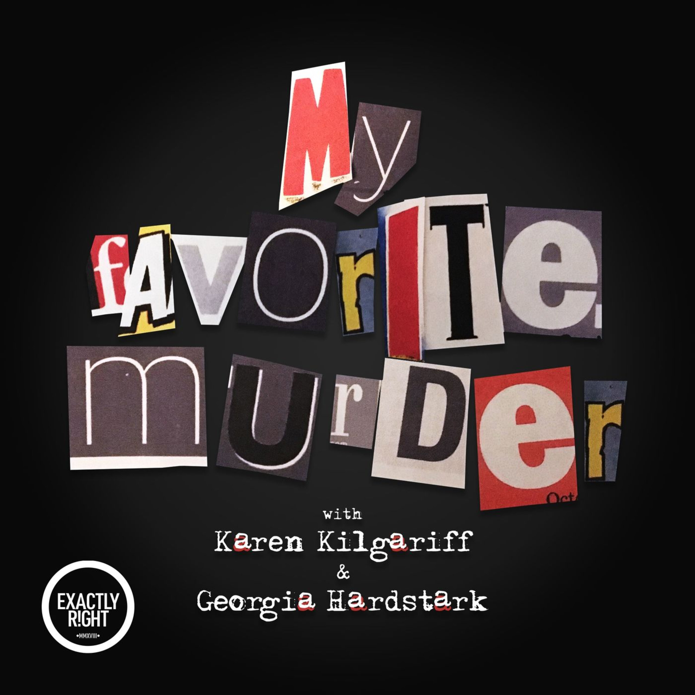
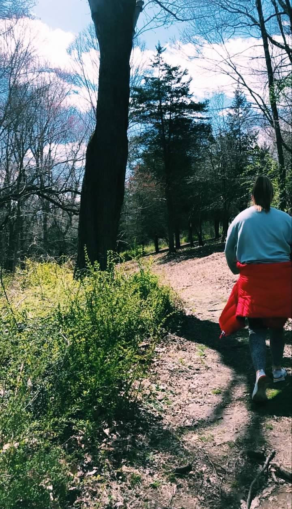
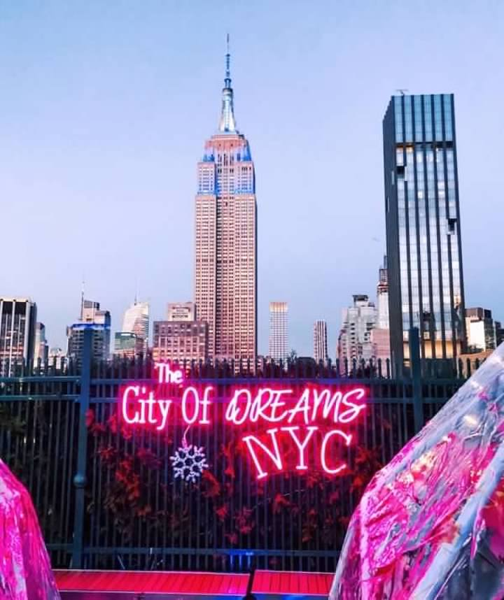

I grew up in Fairfield, CT with my parents and two brothers.

I love to travel with family and friends. This is a photo of me on top of the Diamondhead in Honolulu, HI.

One of my favorite hobbies is drawing and scrapbooking. This is a collage I made of some of my friends from using Adobe Illustrator.

My favorite thing to do with my family is go skiing. I love Vermont skiing, and I hope to someday ski on the west coast.

I also enjoy cooking. I love to recreate recipes from a cookbook my Bubbie wrote.

I grew up as a huge Patriots and Michigan football fan.

This is an image of one of my favorite true crime comedy podcasts, My Favorite Murder. The creators speak about true crime and feminism in a lighthearted fashion.

With the beautiful scenery in CT and in Ann Arbor, my friends and I love to go on long walks and explore. My favorite spot is the Nichols Arboretum in Ann Arbor.

Growing up on the east coast, I've always dreamed of living in New York City one day!